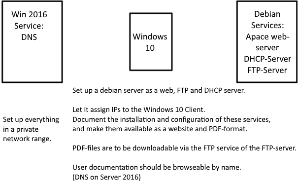
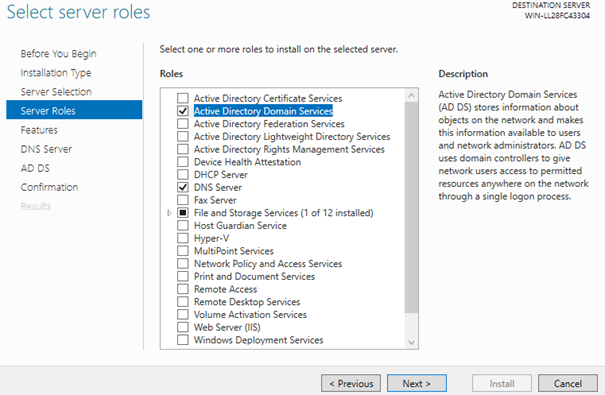
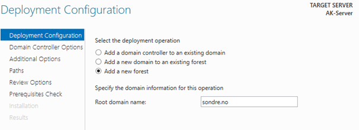
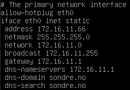
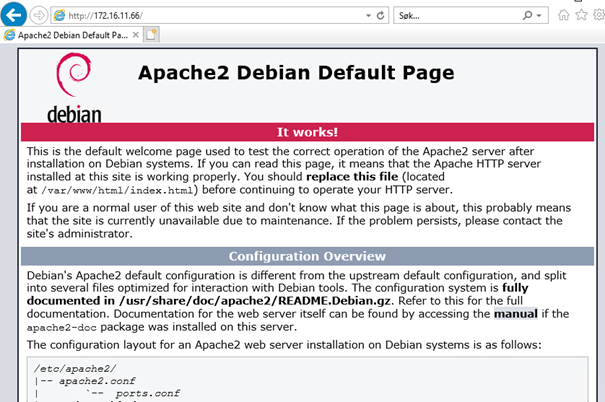
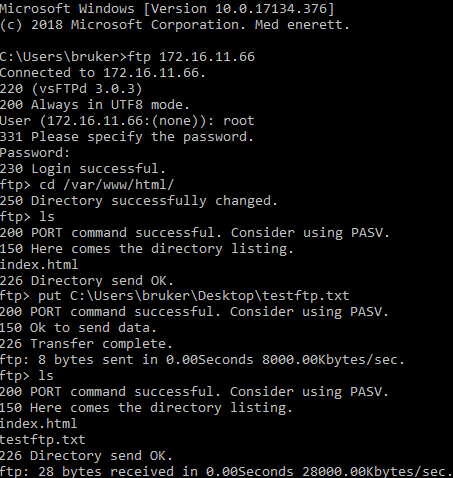
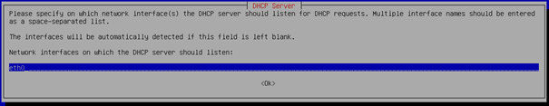
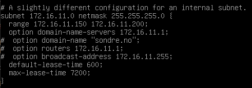
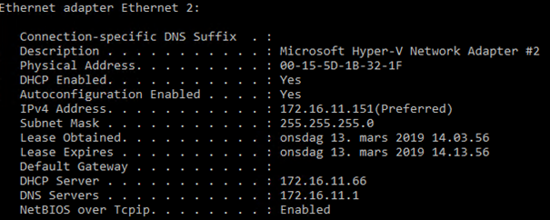

About the assignment
This is an assignment I did at school. We were tasked with setting up 3 VMs with Debian, Server 2016 and one Win10 client.
I’ve named each VM AK(for ArbeidsKrav, Norwegian for required assignment) – and then their role in the network. Klient is Norwegian for client.
We were to configure each VM like this:
AK-Debian: Apache web-server, DHCP server, FTP server.
AK-Server: DNS (Domain Name Services).
AK-Klient: Blank.
Here’s the full assignment, I’ve taken the liberty of translating it to English for your reading pleasure:

Documentation
First thing I did was to set up 3 VMs with each their own operating systems. AK-Debian, AK-Server and AK-Klient-WIN10.
Server 2016
Then I started configuring the VMs, starting with Server 2016.
I installed the Active Directory Domain Services and DNS server roles.

After that I promoted the server to domain controller of the new domain Sondre.no

Then I just clicked next, next, next, install since I didn’t need to change any more settings for this lab environment.
Debian initial setup
After I was done with installing the required services on Win2016, I started working on my Debian VM, starting with installing all the required services.
I downloaded an updated app list using this command:
sudo apt-get update
I downloaded and installed Apache2 using this command:
sudo apt-get install apache2
I downloaded and installed ISC DHCP Server using this command:
apt-get install isc-dhcp-server
I downloaded and installed vsFTPd server and FTP client using this command:
apt-get install vsftpd ftp
I then downloaded and installed 2 other utilities that would probably come in handy in the assignment:
apt-get install net-tools
apt-get install dnsutils
After I had installed everything I needed for the assignment, I turned the Debian off and made a control point in Hyper-V manager in case I made some big errors during setup.
Once the backup was done, I switched the Debian over to a virtual network in Hyper-V along with the Server2016 and win10 client and turned it back on.
I then changed network settings on the Debian to this (/etc/network/interfaces):

After doing that I tested the Apache setup by going to the Debian’s IP in a web browser on the win10 client. This page popped up, indicating Apache was set up correctly.

FTP on Debian
I then set about getting FTP to work, so I could transfer my website to the Debian.
I opened the config file at /etc/vsftpd.conf and added this line at the bottom: write_enable=YES
And then I opened /etc/ftpusers, where users who are denied FTP access are listed. I removed root, since I need root access to transfer to the Apache folder.
Then I restarted vsftpd by running «systemctl restart vsftpd»
After that I ran a test using FTP via CMD on my windows 10 client. It seems to be working:

Upon checking the directory on the Debian, I can see the testftp file, indicating that it’s working. I now know that I can upload my website to the Apache directory with no issues.
DHCP on Debian
Before I started configuring DHCP, I created another control point of the Debian VM.
Then I ran this command to set the eth0 interface for DHCP:
dpkg-reconfigure isc-dhcp-server

Then I configured the dhcpd config file at /etc/dhcp/dhcpd.conf like this:

After configuring DHCP I restarted the service by running these 2 commands:
service isc-dhcp-server stop
service isc-dhcp-server start
Then I ran a test on my win10 client to test if the DHCP was working
(ipconfig /all):

As we can see, I got an address in the range and lease-time that was configured. Therefore we can confirm DHCP as working.
Website
With every single service working as required, I could start setting up the website to publish on the server. I won’t be able to document the transfer of the website from my computer to the server, but I'm planning on transferring the website folder to the win10 client, and from there transferring it to the Debian server via FTP.
Website template I’ll be using: https://sondret5.github.io/
Useful links used during the project
I gathered some information from these websites, you may find them useful too if you attempt this project:
https://www.digitalocean.com/community/tutorials/how-to-configure-the-apache-web-server-on-an-ubuntu-or-debian-vps
https://wiki.debian.org/DHCP_Server
https://www.howtoforge.com/tutorial/install-and-configure-isc-dhcp-server-in-debian-9/
https://linuxconfig.org/how-to-configure-ftp-server-on-debian-9-stretch-linux